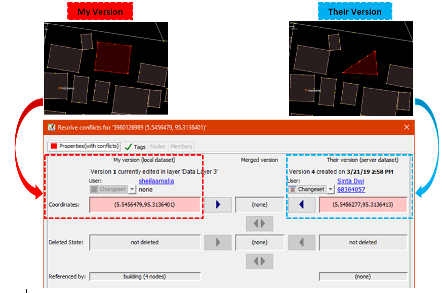
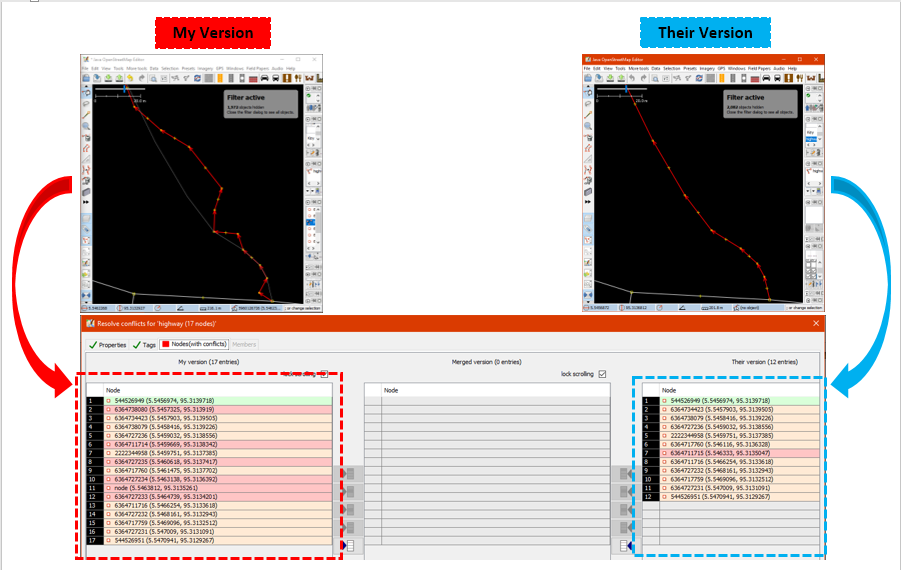
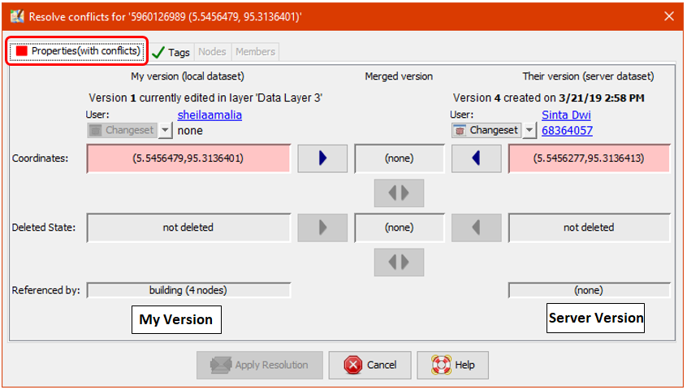
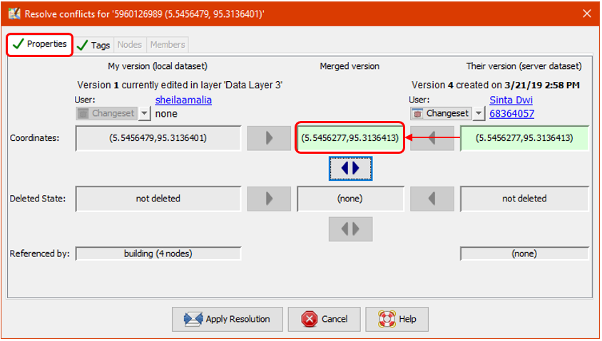
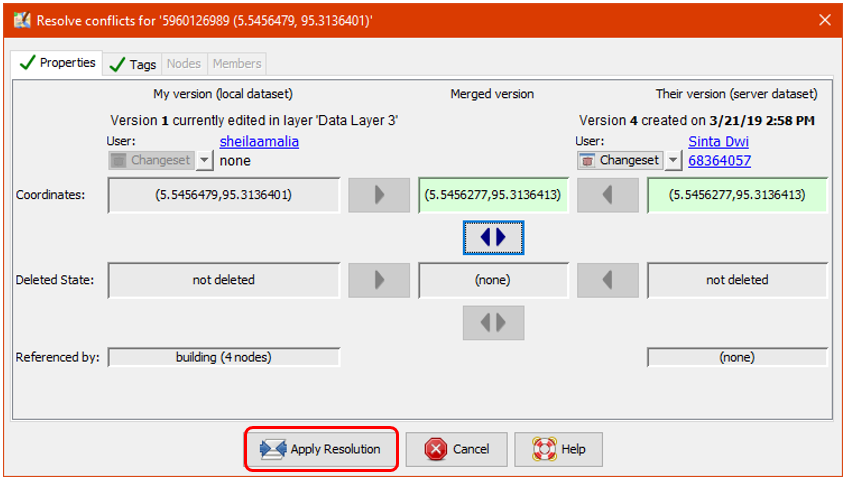

3.5. Resolving Conflict in JOSM
Course Objectives
This section provides:
- An overview of data conflict in OpenStreetMap
- Step-by-step instructions for resolving data conflict in JOSM
- Guidance on preventing and managing data conflict
Learning Activities
Other contributors may have edited the same features as you in JOSM. Alternatively, different data may have been collected in the field for the same features. Both situations cause data conflicts during the upload process. Therefore, it is critical for digitizers to learn about data conflicts in OpenStreetMap, conflict types, and how to fix them using JOSM.
1. Data Conflicts in OpenStreetMap
While uploading your edits in JOSM, you might have received a message like this:

This indicates a data conflict in OSM. A conflict has occurred because you have been editing the same data/object(s) as another contributor simultaneously. Thus, the other contributor has uploaded their changes first and they have been received by the OSM Server. You are attempting to upload the same data/object(s) with your own changes. Therefore, your changes are automatically rejected by the server because it causes confusion.
You will come across data conflicts in JOSM when you are editing, adding, or deleting objects which are being worked on by another contributor. The other contributor has uploaded their changes slightly before you. Therefore, when you try to upload your changes, it causes confusion for the OSM Server because it does not know which changes are correct. If this happens, the data conflict must be fixed before you upload your changes.

The image above illustrates a potential conflict stemming from the different positioning of the rectangular object in My version and Their version (which has already been received by the server). To resolve this conflict, you have to choose either ‘My Version’ or ‘Their Version’.
2. Types of Data Conflict in JOSM
2.1 Conflict of Properties
A conflict of properties occurs when an object has been moved or deleted and one or more of its nodes is in a different location than the other version.

The image above illustrates a conflict of properties in JOSM. In My version the object is square and in Their version a corner nodes has been deleted. To fix this, you need to choose which version is correct.
2.2 Conflict of Tags
A conflict of tags occurs when different tags have been assigned to the same object by multiple contributors. The tag can be deleted or changed to the other version.

The image above illustrates varied tags for the same object between two versions in JOSM. My version has Rumah Sakit tag (amenity = hospital) and a name value of ‘Rumah Sakit Tebet Raya’. While Their version has tag (amenity = clinic) and a name value of ‘RS Tebet Timur’. You have to choose which version has the correct information before uploading to the server.
2.3 Conflict of Nodes
A conflict of nodes occurs when there are differences in the direction of a way or if nodes in a way have been deleted or moved.

3. Fix Conflict Data in JOSM
Fixing conflict data in JOSM is quite simple, even though most OSM contributors do find it confusing. Essentially, you have to decide which is the correct version and choose to keep your version or delete your version and use their version. To fix conflict data in JOSM:
- When the conflict window appears, you might be inclined to select the Synchronize node 5,960,126 only option. However, this option will only fix the conflict in one node. Instead, select Synchronize entire dataset so you can resolve all conflicting nodes in one go.

- JOSM will then display the number of conflicts, select OK.

- In the ‘Windows’ menu, select Conflict to show the conflict window. This activates a list of conflicts in the Conflict panel to the lower right corner of JOSM. You can choose which conflict you want to fix and select Resolve.

- When you select the Resolve button, the conflict window appears and shows details about the conflict. This might look complicated but it is actually fairly straightforward. You can tell which conflict type has been detected because a red square symbol will display in the corresponding tab (either properties, tags or nodes). You can look at a list of changed or moved coordinates as shown in the image below.

- You can only resolve one conflict at a time. If you are sure that your version is the correct one (you edit / add the object based on your field survey mapping or you already know the object personally), then choose My Version (local dataset). However, if you are not sure about your version and think that the other version is more convincing select Their version (server dataset). Select:
in the version you think is right. If the conflict has been fixed then the symbol in the tab will change to:


- After you have selected the right version, make sure the color of the conflict box has changed from pink to green. This indicates you have successfully fixed the conflict.

- Select Apply Resolution as shown in the picture above. When you have resolved all conflicts, you can upload your OSM changes.

- You can also resolve conflicts by right clicking one in the conflict window and selecting either Resolve to my versions or Resolve to their versions. You can also right click and Zoom to Conflict.

| Tips: |
|---|
| You cannot upload changes until you have resolved all conflicts. Be careful when resolving the conflicts and check them one-by-one. |
4. Avoiding Data Conflict in JOSM
To avoid conflicts:
-
Upload your changes continuously
To minimize conflicts, you should frequently upload. Upload your changes every 20 buildings or every 15 minutes. The longer you wait to upload the higher the chance that another contributor has edited and uploaded the same data.
You can update your OSM data first before uploading. This allows you to retrieve the latest OSM data from the server before uploading. Select File → Update data or Update Modified and wait until it has finished updating. Then you can upload your changes.

- Edit Only in Downloaded Area
Restrict editing to your downloaded area to minimize conflict risk in JOSM. The area outside of your downloaded area is marked by diagonal lines, do not edit this region.

- Using Tasking Manager
If you want to do collaborative mapping, you can use Tasking Manager. It divides a project area into a grid of tasks. Once a task is selected it is locked and cannot be chosen by another contributor. This allows many people to work in the same area at the same time while limiting the chance of conflicts.

[Quiz] Check Your Knowledge
-
My version means the local data that you will upload to OSM server, while Their version is the server data that already exists.
a. True
b. False
-
To avoid conflict, you should upload at night, when everyone is not awake and not using OpenStreetMap.
a. True
b. False
-
Conflict tags is the type where there are difference between the tags that you are going to upload with existing object in server
a. True
b. False
Answer: 1. A | 2. B | 3. A
Activity Checklist
By the end of this section you should be able to:
- Understand the concept of data conflict in OSM